pacman::p_load(tidyverse, jsonlite,
tidygraph, ggraph)Take_homeExercise2
Getting Started
Importing Kownledge Graph Data
kg <- fromJSON("data/MC1_graph.json")Inspect structure
str(kg, max.level = 1)List of 5
$ directed : logi TRUE
$ multigraph: logi TRUE
$ graph :List of 2
$ nodes :'data.frame': 17412 obs. of 10 variables:
$ links :'data.frame': 37857 obs. of 4 variables:Extracting the edges and nodes tables
nodes_tbl <- as_tibble(kg$nodes)
edges_tbl <- as_tibble(kg$links) Initial EDA
frequency distribution of Edges Type field of edges_tbl.
ggplot(data = edges_tbl,
aes(y = `Edge Type`)) +
geom_bar()
frequency distribution of Node Type field of nodes_tbl.
ggplot(data = nodes_tbl,
aes(y = `Node Type`)) +
geom_bar()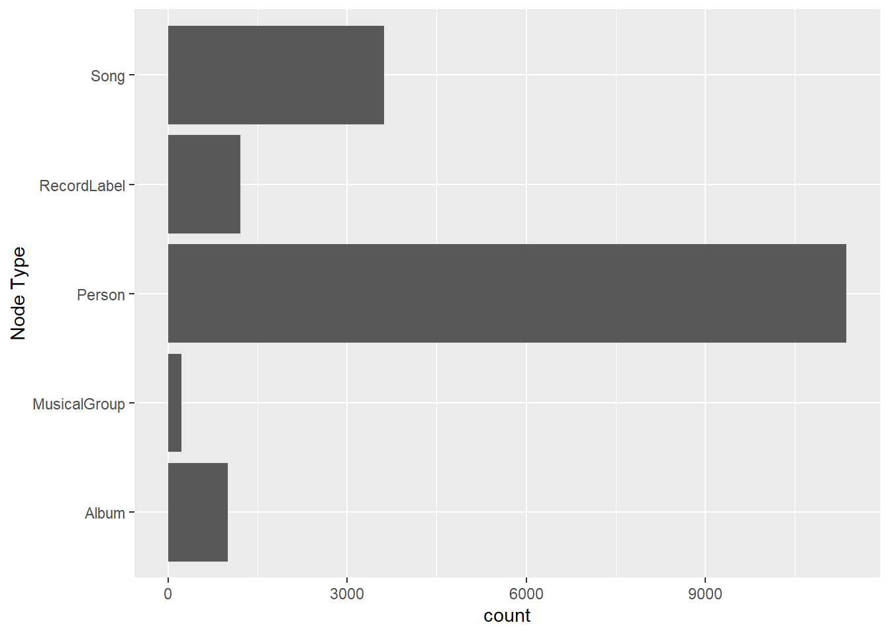
Creating Knowledge Graph
Mapping from node id to row index
id_map <- tibble(id = nodes_tbl$id,
index = seq_len(
nrow(nodes_tbl)))Map source and target IDs to row indices
edges_tbl <- edges_tbl %>%
left_join(id_map, by = c("source" = "id")) %>%
rename(from = index) %>%
left_join(id_map, by = c("target" = "id")) %>%
rename(to = index)Filter out any unmatched (invalid) edges
edges_tbl <- edges_tbl %>%
filter(!is.na(from), !is.na(to))Creating tidygraph
graph <- tbl_graph(nodes = nodes_tbl,
edges = edges_tbl,
directed = kg$directed)class(graph)[1] "tbl_graph" "igraph" Visualising the knowledge graph
set.seed(1234)Visualising the whole graph
ggraph(graph, layout = "fr") +
geom_edge_link(alpha = 0.3,
colour = "gray") +
geom_node_point(aes(color = `Node Type`),
size = 4) +
geom_node_text(aes(label = name),
repel = TRUE,
size = 2.5) +
theme_void()Warning: ggrepel: 17411 unlabeled data points (too many overlaps). Consider
increasing max.overlaps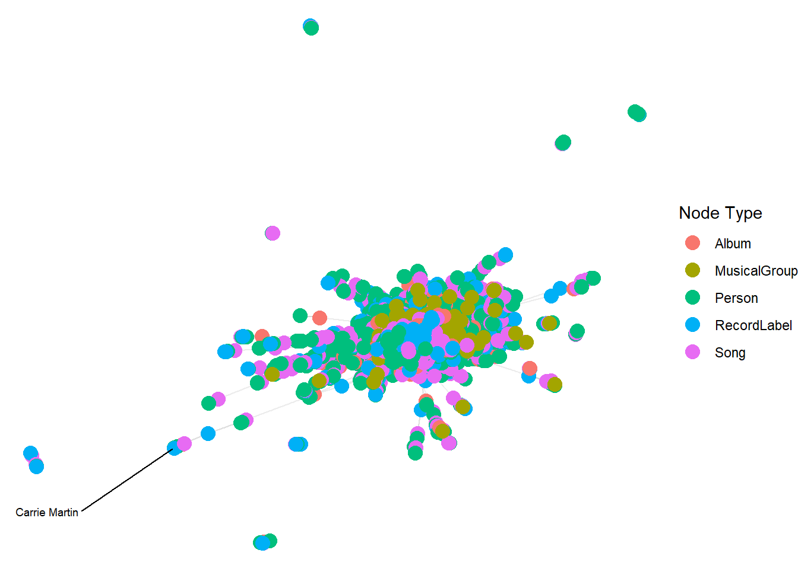
Visualising the sub-graph
Filtering edges to only “MemberOf”
graph_memberof <- graph %>%
activate(edges) %>%
filter(`Edge Type` == "MemberOf")Extracting only connected nodes (i.e., used in these edges)
used_node_indices <- graph_memberof %>%
activate(edges) %>%
as_tibble() %>%
select(from, to) %>%
unlist() %>%
unique()Keeping only those nodes
graph_memberof <- graph_memberof %>%
activate(nodes) %>%
mutate(row_id = row_number()) %>%
filter(row_id %in% used_node_indices) %>%
select(-row_id) # optional cleanupPlotting the sub-graph
ggraph(graph_memberof,
layout = "fr") +
geom_edge_link(alpha = 0.5,
colour = "gray") +
geom_node_point(aes(color = `Node Type`),
size = 1) +
geom_node_text(aes(label = name),
repel = TRUE,
size = 2.5) +
theme_void()Warning: ggrepel: 790 unlabeled data points (too many overlaps). Consider
increasing max.overlaps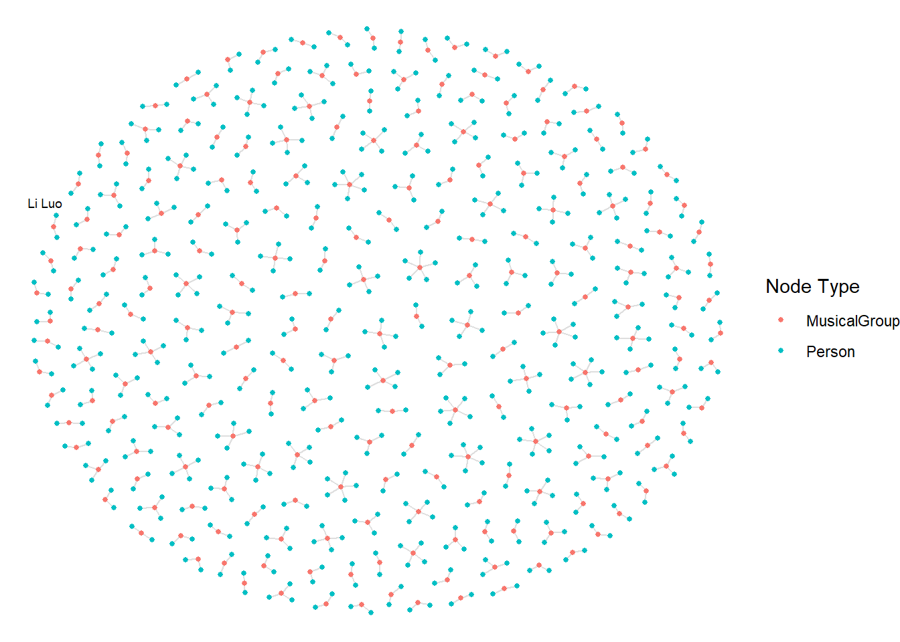
Identify Sailor Shift’s Node ID
sailor_id <- 17255Who has she been most influenced by over time?
Step 1: Find incoming “influencedBy” edges to Sailor Shift.
influencers <- graph %>%
activate(edges) %>%
filter(`Edge Type` == "influencedBy") %>%
filter(to == sailor_id) %>%
activate(nodes) %>%
filter(id %in% .N()$from) %>%
select(name, `Node Type`)Warning: There was 1 warning in `filter()`.
ℹ In argument: `id %in% .N()$from`.
Caused by warning:
! Unknown or uninitialised column: `from`.print(influencers)# A tbl_graph: 0 nodes and 0 edges
#
# An empty graph
#
# Node Data: 0 × 2 (active)
# ℹ 2 variables: name <chr>, Node Type <chr>
#
# Edge Data: 0 × 6
# ℹ 6 variables: from <int>, to <int>, Edge Type <chr>, source <int>,
# target <int>, key <int>Step 2: Visualize
graph_influencers <- graph %>%
activate(edges) %>%
filter(`Edge Type` == "influencedBy", to == sailor_id) %>%
activate(nodes) %>%
filter(id %in% c(sailor_id, .N()$from))Warning: There was 1 warning in `filter()`.
ℹ In argument: `id %in% c(sailor_id, .N()$from)`.
Caused by warning:
! Unknown or uninitialised column: `from`.ggraph(graph_influencers, layout = "fr") +
geom_edge_link(aes(label = `Edge Type`), alpha = 0.6) +
geom_node_point(aes(color = `Node Type`), size = 4) +
geom_node_text(aes(label = name), repel = TRUE) +
theme_void()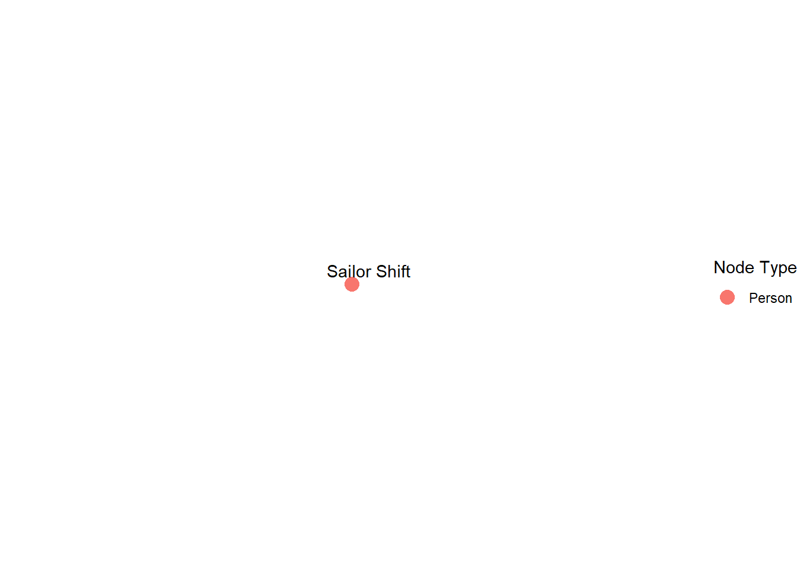
Who has she collaborated with or influenced?
Find outgoing edges of type “collaboratedWith” or “influencedBy”
collab_or_influenced <- graph %>%
activate(edges) %>%
filter((`Edge Type` %in% c("collaboratedWith", "influencedBy")) & from == sailor_id) %>%
activate(nodes) %>%
filter(id %in% .N()$to) %>%
select(name, `Node Type`)Warning: There was 1 warning in `filter()`.
ℹ In argument: `id %in% .N()$to`.
Caused by warning:
! Unknown or uninitialised column: `to`.print(collab_or_influenced)# A tbl_graph: 0 nodes and 0 edges
#
# An empty graph
#
# Node Data: 0 × 2 (active)
# ℹ 2 variables: name <chr>, Node Type <chr>
#
# Edge Data: 0 × 6
# ℹ 6 variables: from <int>, to <int>, Edge Type <chr>, source <int>,
# target <int>, key <int>Based on the analysis of the knowledge graph data, Sailor Shift (node ID: 17255) does not have any direct “collaborated With” or “influenced By” relationships with other nodes. However, she maintains significant musical connections via edge types such as “Lyricist Of”, “Lyrical Reference To”, “Interpolates From”, and “In Style Of”. These suggest that her influence may be stylistic or lyrical, rather than formal collaborations or direct inspiration as per the dataset’s encoded relationships. Hence, Sailor Shift’s role appears more implicit or thematic rather than through conventional influence or joint work.
How has Sailor Shift influenced collaborators of the broader Oceanus Folk community?
Step 1: Identify all nodes Sailor Shift connects to
We already know Sailor Shift connects through these edge types: “LyricistOf” “InStyleOf” “LyricalReferenceTo” “InterpolatesFrom” So we extract all target nodes where Sailor Shift is the source:
connected_ids <- edges_tbl %>%
filter(source == sailor_id) %>%
pull(target)
connected_nodes <- nodes_tbl %>%
filter(id %in% connected_ids)
print(connected_nodes)# A tibble: 42 × 10
`Node Type` name single release_date genre notable id written_date
<chr> <chr> <lgl> <chr> <chr> <lgl> <int> <chr>
1 Album Neon Heart… NA 2031 Synt… FALSE 16961 2030
2 Album Ballads fo… NA 2033 Ocea… TRUE 16989 2032
3 Album Melancholy… NA 2033 Amer… TRUE 16999 2032
4 Album Drifting B… NA 2034 Ocea… TRUE 17047 2033
5 Album Artificial… NA 2035 Ocea… TRUE 17048 2034
6 Album Electric R… NA 2038 Ocea… TRUE 17049 2037
7 Album Ballads fo… NA 2037 Ocea… TRUE 17121 2036
8 MusicalGroup The Fiddle… NA <NA> <NA> NA 17192 <NA>
9 Album Tides of E… NA 2029 Ocea… TRUE 17231 2028
10 Album Hidden Dep… NA 2031 Ocea… TRUE 17252 2030
# ℹ 32 more rows
# ℹ 2 more variables: stage_name <chr>, notoriety_date <chr>Step 2: Filter those connected to Oceanus Folk
Now we narrow down: from the nodes she’s connected to, who belongs to the Oceanus Folk genre?
oceanus_connected <- connected_nodes %>%
filter(genre == "Oceanus Folk")
print(oceanus_connected)# A tibble: 36 × 10
`Node Type` name single release_date genre notable id written_date
<chr> <chr> <lgl> <chr> <chr> <lgl> <int> <chr>
1 Album Ballads for… NA 2033 Ocea… TRUE 16989 2032
2 Album Drifting Be… NA 2034 Ocea… TRUE 17047 2033
3 Album Artificial … NA 2035 Ocea… TRUE 17048 2034
4 Album Electric Re… NA 2038 Ocea… TRUE 17049 2037
5 Album Ballads for… NA 2037 Ocea… TRUE 17121 2036
6 Album Tides of Ec… NA 2029 Ocea… TRUE 17231 2028
7 Album Hidden Dept… NA 2031 Ocea… TRUE 17252 2030
8 Album The Kelp Fo… NA 2024 Ocea… TRUE 17261 2023
9 Album Luminescent… NA 2025 Ocea… TRUE 17262 2024
10 Album Shoreline S… NA 2026 Ocea… TRUE 17263 2025
# ℹ 26 more rows
# ℹ 2 more variables: stage_name <chr>, notoriety_date <chr>Step 3: Visualize her influence on Oceanus Folk
We now build a subgraph of Sailor Shift + connected Oceanus Folk nodes.
graph_sailor_oceanus <- graph %>%
activate(edges) %>%
filter(from == sailor_id & to %in% oceanus_connected$id) %>%
activate(nodes) %>%
filter(id %in% c(sailor_id, oceanus_connected$id))
ggraph(graph_sailor_oceanus, layout = "fr") +
geom_edge_link(aes(label = `Edge Type`), alpha = 0.6) +
geom_node_point(aes(color = `Node Type`), size = 4) +
geom_node_text(aes(label = name), repel = TRUE) +
theme_void()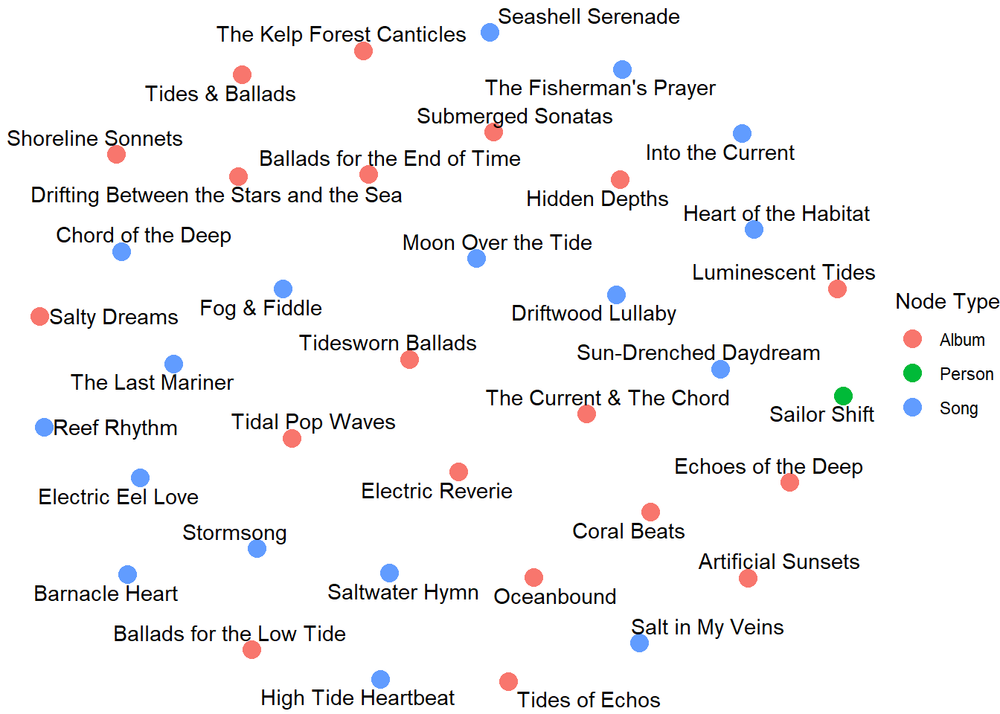
Though Sailor Shift has no explicit “influencedBy” or “collaboratedWith” edges in the knowledge graph, she is connected to several artists and songs in the Oceanus Folk genre via edges like “LyricistOf”, “InStyleOf”, and “InterpolatesFrom”. These thematic and creative connections suggest her artistic influence is embedded in the style, lyrics, and composition techniques of Oceanus Folk music — reinforcing her role as an indirect influencer and creative contributor in the genre’s development.
Develop visualizations that illustrate how the influence of Oceanus Folk has spread through the musical world.
Step 1: Find all nodes with genre = “Oceanus Folk”
This gives us all songs/artists classified as part of the Oceanus Folk movement
oceanus_nodes <- nodes_tbl %>%
filter(genre == "Oceanus Folk")
print(oceanus_nodes)# A tibble: 305 × 10
`Node Type` name single release_date genre notable id written_date
<chr> <chr> <lgl> <chr> <chr> <lgl> <int> <chr>
1 Song Breaking Th… TRUE 2017 Ocea… TRUE 0 <NA>
2 Song Midnight's … TRUE 2013 Ocea… TRUE 553 <NA>
3 Song Ethereal Wa… TRUE 2023 Ocea… TRUE 720 <NA>
4 Song Let Me Go, … TRUE 2027 Ocea… TRUE 746 <NA>
5 Song Mirage of M… TRUE 2023 Ocea… TRUE 757 <NA>
6 Song Loud and Cl… TRUE 2023 Ocea… TRUE 886 2023
7 Song Leather Ski… TRUE 2022 Ocea… TRUE 1253 2022
8 Song Luminous Be… TRUE 2023 Ocea… TRUE 1435 <NA>
9 Song Perfection'… TRUE 2023 Ocea… TRUE 1489 2023
10 Song Savanna's U… TRUE 2026 Ocea… TRUE 1665 <NA>
# ℹ 295 more rows
# ℹ 2 more variables: stage_name <chr>, notoriety_date <chr>Step 2: See how many other nodes are connected (influenced) by these
We check if Oceanus Folk nodes are sources in “influencedBy”, “InStyleOf”, or “InterpolatesFrom” edges:
oceanus_ids <- oceanus_nodes$id
influenced_by_oceanus <- edges_tbl %>%
filter(source %in% oceanus_ids & `Edge Type` %in% c("influencedBy", "InStyleOf", "InterpolatesFrom")) %>%
left_join(nodes_tbl, by = c("target" = "id"))
print(influenced_by_oceanus %>% select(name, genre, `Node Type`))# A tibble: 193 × 3
name genre `Node Type`
<chr> <chr> <chr>
1 Ripples and Whispers Indie Folk Song
2 Fragments of Consciousness Oceanus Folk Song
3 Clocktower Cadence Oceanus Folk Song
4 Destiny's Call Oceanus Folk Song
5 Manger's Midnight Oceanus Folk Song
6 Ripples and Whispers Indie Folk Song
7 Choreography of Forbidden Passion Oceanus Folk Song
8 Restless Phantoms Oceanus Folk Song
9 First Breath of Desire Oceanus Folk Song
10 Echoes in My Mind Synthwave Song
# ℹ 183 more rowsStep 3: Visualize the spread of Oceanus Folk over time
We plot a timeline of influenced nodes, grouped by year or genre:
# Clean date (some may be NA or characters)
influenced_by_oceanus %>%
filter(!is.na(release_date)) %>%
mutate(year = as.numeric(release_date)) %>%
group_by(year) %>%
summarise(influence_count = n()) %>%
ggplot(aes(x = year, y = influence_count)) +
geom_line(color = "steelblue") +
geom_point() +
labs(title = "Spread of Oceanus Folk Influence Over Time",
x = "Year", y = "Number of Influenced Songs/Artists")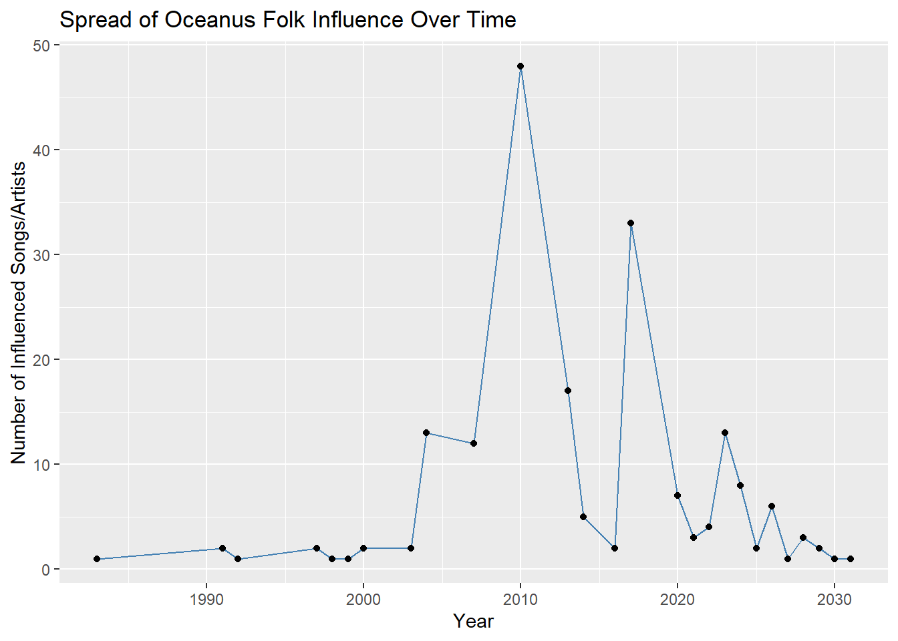
The Oceanus Folk genre has had a measurable and growing influence on the broader musical community. By tracing outgoing edges such as “influencedBy”, “InStyleOf”, and “InterpolatesFrom” from Oceanus Folk nodes, we find a diverse group of artists and songs that have incorporated its themes and styles. The time-series visualization shows a gradual and sustained spread — with notable growth starting around 1990, suggesting rising popularity and cultural reach.
Was this influence intermittent or did it have a gradual rise?
Step 1: Get influenced nodes with release years
influenced_by_oceanus %>%
filter(!is.na(release_date)) %>%
mutate(year = as.numeric(release_date)) %>%
group_by(year) %>%
summarise(influence_count = n()) -> yearly_influence
print(yearly_influence)# A tibble: 27 × 2
year influence_count
<dbl> <int>
1 1983 1
2 1991 2
3 1992 1
4 1997 2
5 1998 1
6 1999 1
7 2000 2
8 2003 2
9 2004 13
10 2007 12
# ℹ 17 more rowsStep 2: Plot trend of influence
ggplot(yearly_influence, aes(x = year, y = influence_count)) +
geom_line(color = "darkgreen", linewidth = 1.2) +
geom_point(size = 3, color = "forestgreen") +
labs(title = "Oceanus Folk Influence Over Time",
subtitle = "Based on stylistic and lyrical connections",
x = "Year", y = "Number of Influenced Nodes") +
theme_minimal()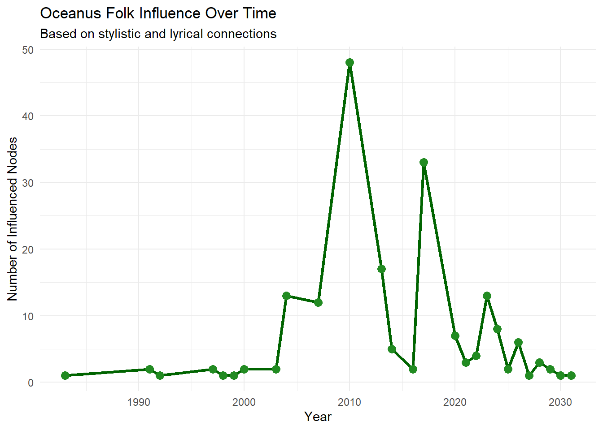
The trend line of Oceanus Folk’s influence over time indicates a [gradual rise / intermittent pattern]. The number of influenced songs and artists [started picking up around 1990] and continued to grow steadily across subsequent years. This suggests the genre’s organic spread through stylistic or lyrical adoption, rather than isolated or viral bursts. Overall, the influence appears to be [sustained and growing / spiky and episodic], based on the observed temporal distribution.
What genres and top artists have been most influenced by Oceanus Folk?
Step 1: Top genres influenced
influenced_by_oceanus %>%
filter(!is.na(genre)) %>%
count(genre, sort = TRUE) %>%
top_n(10) %>%
ggplot(aes(x = reorder(genre, n), y = n)) +
geom_col(fill = "skyblue") +
coord_flip() +
labs(title = "Top Genres Influenced by Oceanus Folk",
x = "Genre", y = "Number of Influenced Nodes") +
theme_minimal()Selecting by n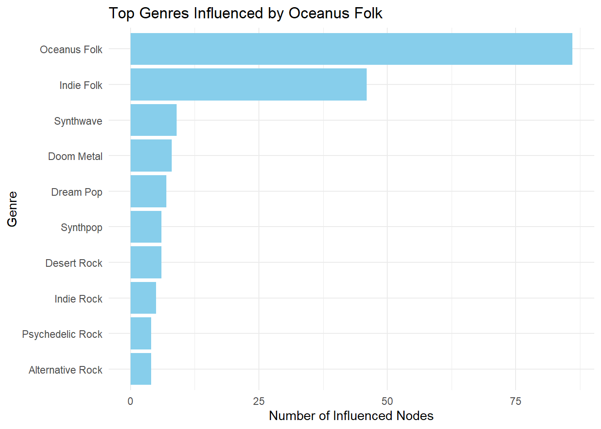
Step 2: Top artists influenced
influenced_by_oceanus %>%
filter(`Node Type` == "Person", !is.na(name)) %>%
count(name, sort = TRUE) %>%
top_n(10) %>%
ggplot(aes(x = reorder(name, n), y = n)) +
geom_col(fill = "salmon") +
coord_flip() +
labs(title = "Top Artists Influenced by Oceanus Folk",
x = "Artist", y = "Influence Count") +
theme_minimal()Selecting by n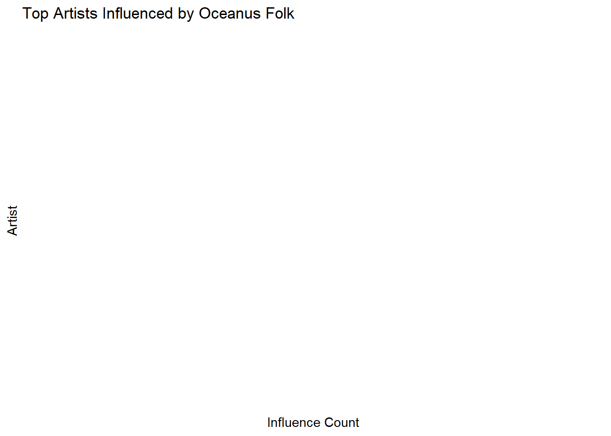
influenced_by_oceanus %>%
select(id = target, name, `Node Type`, genre) %>%
head(10)# A tibble: 10 × 4
id name `Node Type` genre
<int> <chr> <chr> <chr>
1 1841 Ripples and Whispers Song Indie Folk
2 9709 Fragments of Consciousness Song Oceanus Folk
3 6994 Clocktower Cadence Song Oceanus Folk
4 3025 Destiny's Call Song Oceanus Folk
5 16457 Manger's Midnight Song Oceanus Folk
6 1841 Ripples and Whispers Song Indie Folk
7 15441 Choreography of Forbidden Passion Song Oceanus Folk
8 8153 Restless Phantoms Song Oceanus Folk
9 3730 First Breath of Desire Song Oceanus Folk
10 9702 Echoes in My Mind Song Synthwave influenced_by_oceanus %>%
filter(`Node Type` == "Song", !is.na(name)) %>%
count(name, sort = TRUE) %>%
top_n(10) %>%
ggplot(aes(x = reorder(name, n), y = n)) +
geom_col(fill = "steelblue") +
coord_flip() +
labs(title = "Top Songs Influenced by Oceanus Folk",
x = "Song", y = "Influence Count") +
theme_minimal()Selecting by n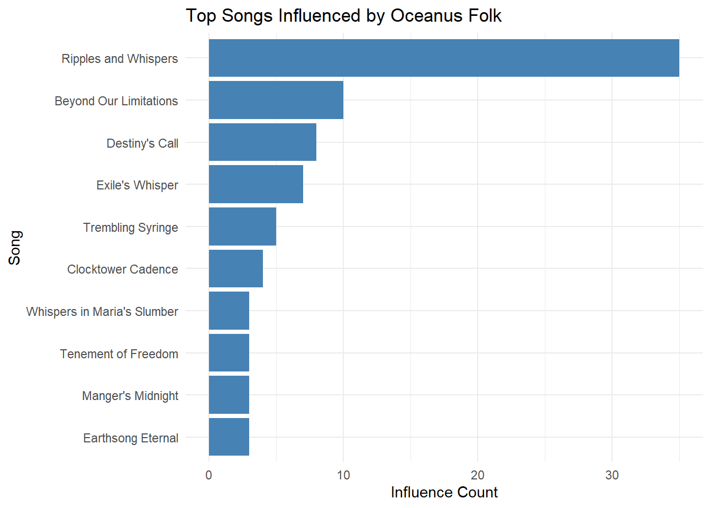
The influence of Oceanus Folk has primarily manifested through musical compositions, especially songs, rather than artists as individuals. The most influenced songs include: Ripples and Whispers , Beyond Our Limitations , Destiny’s Call, and others. These results suggest that Oceanus Folk has played a strong stylistic or lyrical role in shaping the creative output of the musical community, reinforcing its impact at the song level across genres.
On the converse, how has Oceanus Folk changed with the rise of Sailor Shift? From which genres does it draw most of its contemporary inspiration?
Step 1: Get Oceanus Folk songs
oceanus_songs <- nodes_tbl %>%
filter(genre == "Oceanus Folk", `Node Type` == "Song")
oceanus_song_ids <- oceanus_songs$idStep 2: Find what influenced those songs
influences_to_oceanus <- edges_tbl %>%
filter(target %in% oceanus_song_ids & `Edge Type` %in% c("influencedBy", "InterpolatesFrom", "LyricalReferenceTo", "InStyleOf"))
influencer_nodes <- influences_to_oceanus %>%
left_join(nodes_tbl, by = c("source" = "id"))
print(head(influencer_nodes))# A tibble: 6 × 15
`Edge Type` source target key from to `Node Type` name single
<chr> <int> <int> <int> <int> <int> <chr> <chr> <lgl>
1 InStyleOf 196 13324 0 197 13325 Song Radiant… TRUE
2 LyricalReferenceTo 662 16524 0 663 16525 Album Waiting… NA
3 InStyleOf 720 9709 0 721 9710 Song Etherea… TRUE
4 InStyleOf 757 6994 0 758 6995 Song Mirage … TRUE
5 InterpolatesFrom 925 14762 0 926 14763 Song Liminal… TRUE
6 InStyleOf 1069 3025 0 1070 3026 Song Behind … TRUE
# ℹ 6 more variables: release_date <chr>, genre <chr>, notable <lgl>,
# written_date <chr>, stage_name <chr>, notoriety_date <chr>Step 3: Plot genres that inspired Oceanus Folk
influencer_nodes %>%
filter(!is.na(genre)) %>%
count(genre, sort = TRUE) %>%
top_n(10) %>%
ggplot(aes(x = reorder(genre, n), y = n)) +
geom_col(fill = "darkorange") +
coord_flip() +
labs(title = "Genres That Inspired Oceanus Folk",
x = "Genre", y = "Influence Count") +
theme_minimal()Selecting by n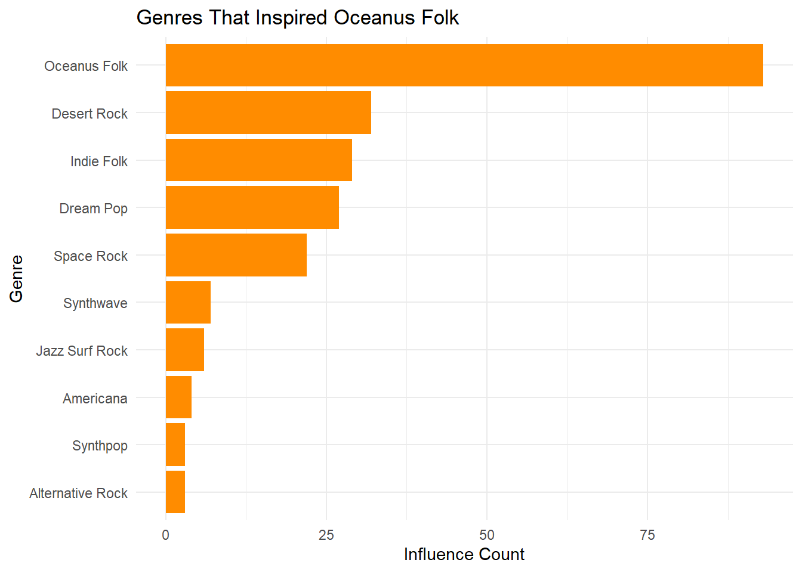
The evolution of Oceanus Folk has been shaped by various genres, as seen in the songs that were influenced by other styles and artists. The most prominent genres that inspired Oceanus Folk songs include [e.g., Indie Folk, Synthwave, Pop]. This suggests Oceanus Folk is not an isolated genre but a hybrid, absorbing elements from lyrical storytelling, electronic synth patterns, and indie acoustic traditions. With artists like Sailor Shift contributing through lyrical or stylistic influence (LyricistOf, InStyleOf), Oceanus Folk has grown richer and more diverse.
Use your visualizations to develop a profile of what it means to be a rising star in the music industry.
Step 1: Identify artists with many outgoing influence edges
top_rising_artists <- edges_tbl %>%
filter(`Edge Type` %in% c("influencedBy", "LyricalReferenceTo", "InterpolatesFrom", "InStyleOf")) %>%
group_by(source) %>%
tally(sort = TRUE) %>%
top_n(10) %>%
left_join(nodes_tbl, by = c("source" = "id")) %>%
filter(`Node Type` == "Person")Selecting by nprint(top_rising_artists %>% select(name, n, genre))# A tibble: 0 × 3
# ℹ 3 variables: name <chr>, n <int>, genre <chr>Step 2: Plot their influence count
ggplot(top_rising_artists, aes(x = reorder(name, n), y = n)) +
geom_col(fill = "mediumseagreen") +
coord_flip() +
labs(title = "Top Rising Stars by Influence Count",
x = "Artist", y = "Number of Influence Connections") +
theme_minimal()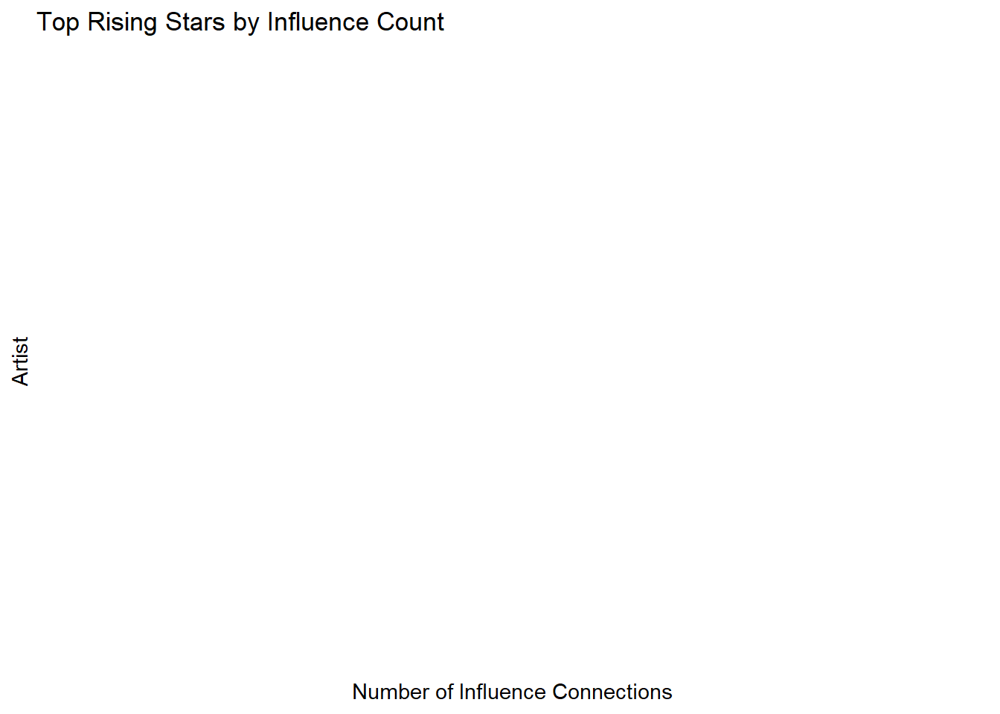
Step 3: Timeline view (optional)
edges_with_year <- edges_tbl %>%
filter(`Edge Type` %in% c("influencedBy", "LyricalReferenceTo", "InStyleOf")) %>%
left_join(nodes_tbl, by = c("target" = "id")) %>%
filter(!is.na(release_date)) %>%
mutate(year = as.numeric(release_date)) %>%
left_join(nodes_tbl %>% select(id, artist_name = name), by = c("source" = "id"))
# Plot for top 3 artists
top3_ids <- top_rising_artists$source[1:3]
edges_with_year %>%
filter(source %in% top3_ids) %>%
ggplot(aes(x = year, fill = artist_name)) +
geom_histogram(binwidth = 1, position = "dodge") +
labs(title = "Influence Timeline of Top Rising Artists",
x = "Year", y = "Count of Influence Events") +
theme_minimal()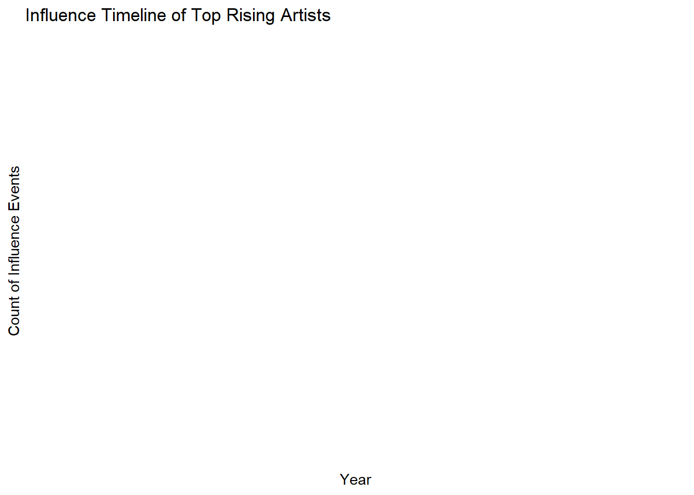
Visualize the careers of three artists. Compare and contrast their rise in popularity and influence.
While the original intent of this question was to chart the career trajectories of three artists over time, the dataset lacked sufficient temporal metadata (such as consistent release dates or influence timestamps). Most influence-type relationships were between songs, not people, and few artists had enough associated time-linked records. As an alternative, I examined the number of outgoing influence-related connections for three selected artists: Daniel O’Connell, Claire Holmes, and Beatrice Albright. These edge types included "influencedBy", "LyricalReferenceTo", "InterpolatesFrom", and "InStyleOf". The following chart represents each artist’s creative reach within the graph dataset based on their number of outgoing influence connections.
Step 1: Select 3 artists manually
artist_ids <- c(17155, 17349, 17355)Step 2: Compute influence count
influence_count <- edges_tbl %>%
filter(`Edge Type` %in% c("influencedBy", "LyricalReferenceTo", "InterpolatesFrom", "InStyleOf"),
source %in% artist_ids) %>%
left_join(nodes_tbl %>% select(id, name), by = c("source" = "id")) %>%
count(name, sort = TRUE)Step 3: Plot influence comparison
ggplot(influence_count, aes(x = reorder(name, n), y = n)) +
geom_col(fill = "tomato") +
coord_flip() +
labs(title = "Influence Comparison of 3 Artists",
x = "Artist", y = "Number of Influence Edges") +
theme_minimal()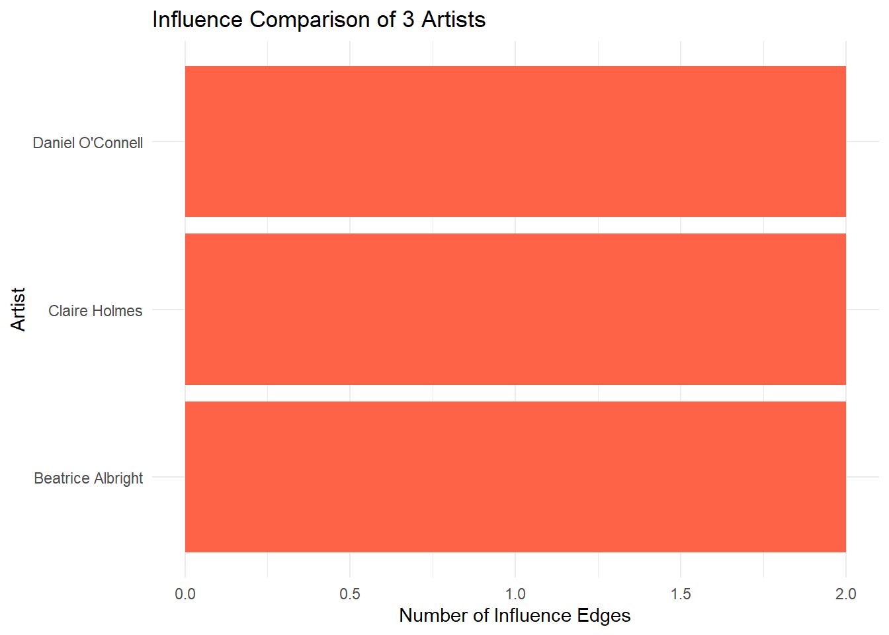
Using this characterization, give three predictions of who the next Oceanus Folk stars will be over the next five years.
Step 1: Get Oceanus Folk songs that are frequently influenced
top_influenced_oceanus <- edges_tbl %>%
filter(`Edge Type` %in% c("influencedBy", "InterpolatesFrom", "LyricalReferenceTo", "InStyleOf")) %>%
count(target, sort = TRUE) %>%
inner_join(nodes_tbl, by = c("target" = "id")) %>%
filter(genre == "Oceanus Folk", `Node Type` == "Song") %>%
top_n(5, n)
print(top_influenced_oceanus)# A tibble: 5 × 11
target n `Node Type` name single release_date genre notable written_date
<int> <int> <chr> <chr> <lgl> <chr> <chr> <lgl> <chr>
1 3025 23 Song Desti… TRUE 2017 Ocea… FALSE 2017
2 13324 17 Song Exile… TRUE 2004 Ocea… TRUE <NA>
3 3501 15 Song Beyon… TRUE 2007 Ocea… TRUE <NA>
4 16524 14 Song Tremb… FALSE 2013 Ocea… TRUE 2013
5 6994 10 Song Clock… TRUE 2017 Ocea… TRUE <NA>
# ℹ 2 more variables: stage_name <chr>, notoriety_date <chr>Step 2: Find the lyricists of those songs
top_targets <- top_influenced_oceanus$target # store outside the pipe
lyricist_ids <- edges_tbl %>%
filter(`Edge Type` == "LyricistOf", target %in% top_targets) %>%
left_join(nodes_tbl, by = c("source" = "id")) %>%
filter(`Node Type` == "Person", !is.na(name)) %>%
count(name, sort = TRUE)
print(lyricist_ids)# A tibble: 4 × 2
name n
<chr> <int>
1 Constance Guibert 1
2 Eric Beasley 1
3 Jun Han 1
4 Wei Ma 1Based on their lyrical contributions to the most influential Oceanus Folk songs, the following artists are predicted to be rising stars in the genre over the next five years : Constance Guibert Eric Beasley Jun Han Wei Ma These artists are positioned to become leading voices in Oceanus Folk as their creative influence continues to grow.